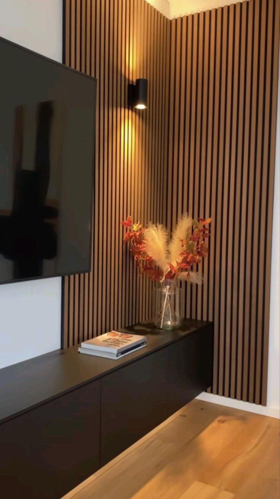
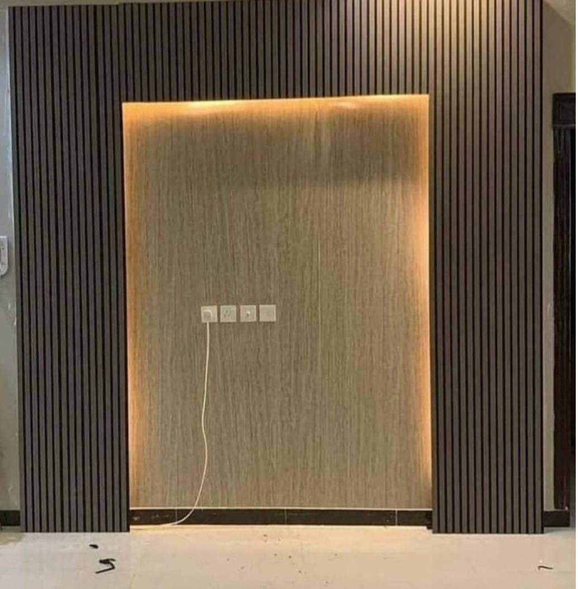

تفاصيل الخدمة
تنفيذ بديل الخشب للجدران والمداخل والمجالس في المدينة المنورة بلمسة دافئة وفاخرة، مع تشطيب نظيف وخامات عملية سهلة الصيانة. نركز على اختيار الخامة المناسبة، وضبط المقاسات قبل التنفيذ، وتقديم تشطيب نظيف يليق بالمنازل والمجالس والمكاتب في المدينة المنورة.


صور أعمال بديل خشب في المدينة المنورة
تعرض هذه الصور نماذج من أعمال بديل خشب في المدينة المنورة التي تنفذها إدراك للديكور والدهان الحديث داخل المدينة المنورة، مع الاهتمام بتناسق التصميم وجودة الخامات ونظافة التشطيب حتى تظهر النتيجة النهائية بصورة مناسبة للمنازل والمجالس والمكاتب.
ما هي خدمة بديل خشب؟
بديل الخشب خامة ديكورية عملية تمنح الجدران والمداخل مظهراً خشبياً دافئاً بدون تعقيد الخشب الطبيعي.
مميزات الخدمة
- مظهر خشبي راقٍ يناسب الديكورات الحديثة.
- سهل التنظيف ومناسب للاستخدام اليومي.
- يناسب خلفيات التلفزيون والمداخل والممرات.
- يمكن دمجه مع بديل الرخام والإضاءة المخفية.
أين تستخدم؟
- خلفيات التلفزيون
- مداخل المنازل
- المجالس والغرف
- المكاتب والاستقبال
لماذا إدراك للديكور والدهان الحديث؟
نعمل بخطوات واضحة تبدأ بالمعاينة وفهم احتياج العميل، ثم اقتراح الحل الأنسب من ناحية الشكل والخامة والتكلفة، وبعدها تنفيذ منظم وتسليم نهائي بصورة تليق بالمكان.
خطوات التنفيذ
معاينة المكان
نحدد المقاسات وطبيعة المساحة قبل البدء.
اختيار التصميم
نقترح الألوان والخامات المناسبة للمكان.
تنفيذ نظيف
نرتب خطوات العمل ونحافظ على جودة التشطيب.
تسليم نهائي
نراجع التفاصيل النهائية مع العميل قبل التسليم.
الأسئلة الشائعة
هل توفرون معاينة قبل تنفيذ بديل خشب؟
نعم، نوفر معاينة للموقع داخل المدينة المنورة لتحديد المقاسات والخامات المناسبة قبل بدء التنفيذ.
كم يستغرق تنفيذ بديل خشب؟
مدة التنفيذ تختلف حسب مساحة المكان وتفاصيل التصميم، ويتم توضيح المدة المتوقعة بعد المعاينة.
هل يمكن طلب عرض سعر عبر واتساب؟
نعم، يمكنك إرسال صور المكان أو المقاسات عبر واتساب وسيتم الرد عليك بالتفاصيل المناسبة.
تحتاج معاينة أو عرض سعر؟
تواصل معنا الآن وحدد نوع الخدمة والمساحة، وسيتم الرد عليك بالتفاصيل المناسبة.